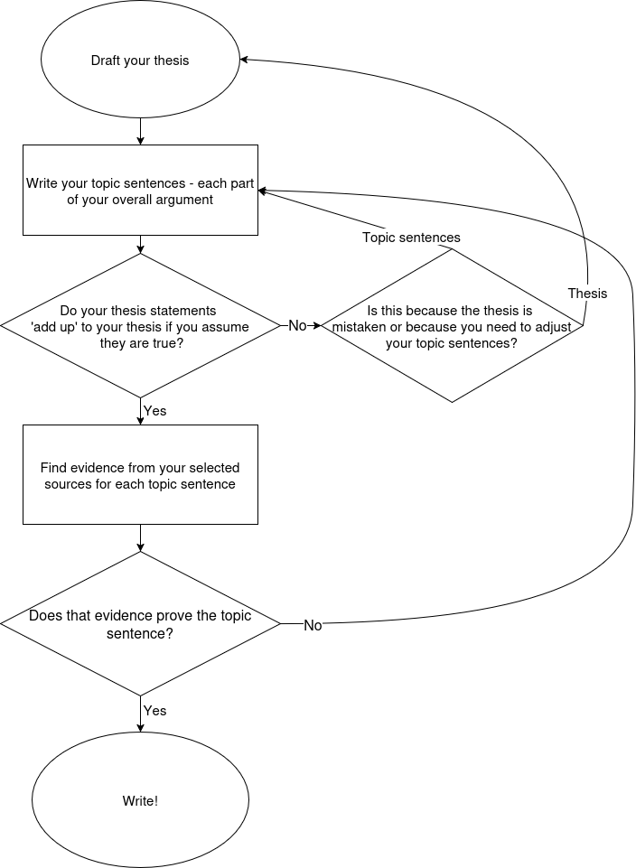

Crafting Your Narrative
A thesis is not a statement of fact and not a summary of what your essay will cover. It is an argument: a debatable, specific, historically grounded claim that directly answers your research question and explains why the answer matters. It is usually one sentence, placed at the end of your introduction.
A strong thesis does five things:
- It makes a historical argument, not just an announcement of the topic.
- It takes a position that a reasonable person could disagree with.
- It is historically specific: anchored in a particular time, place, or event.
- It is focused enough that you can actually prove it within your word limit.
- It answers "so what?": it explains why the argument is historically significant.
Using the riot grrrl example:
Adapted from guidance by the UCLA Department of History.
Check your logic before you find your evidence. Gathering evidence is time-consuming; you want to know your argument structure holds first.

Your thesis is a claim. Your topic sentences are the reasons that claim is true. If every topic sentence is correct and proven, the thesis necessarily follows. The reader should be able to look at your topic sentences alone and see a complete argument.
Inside each body paragraph, your job is to prove that one topic sentence. Explanation tells the reader why it is true; evidence shows that it is. Both are required in every paragraph.
Tells the reader what the evidence means and why it supports your topic sentence. Without it, evidence is just a data point.
A quotation, statistic, or documented fact that shows your claim is grounded in reality. Without it, explanation is just assertion.
Your argument map is the same structure drawn differently. The contention is your thesis. The reasons are your topic sentences. The sub-reasons and evidence boxes are what goes inside each paragraph.
Two tests you can apply to your argument map before you write:
Test 2: For each reason, do the sub-reasons and evidence underneath actually prove it? Does every branch end in an evidence box? If a branch has no evidence, that paragraph cannot be written yet.
How significant was the riot grrrl movement in reshaping teenage girls' self-perception in the United States between 1991 and 1997?
The riot grrrl movement significantly reshaped teenage girls' self-perception in the US by providing alternative models of female identity, though its impact was uneven due to its predominantly white, underground character.
- Riot grrrl's DIY zine culture gave teenage girls a platform to articulate experiences of gender-based discrimination that mainstream media routinely ignored.
- Bands like Bikini Kill and Sleater-Kinney modelled an assertive, non-sexualised female identity that stood in direct contrast to the manufactured femininity promoted by the mainstream music industry.
- The movement's reach was limited by its predominantly white, middle-class membership, meaning many teenage girls could not see themselves represented in its imagery or message.
- By the mid-1990s, the commercial appropriation of riot grrrl's language by acts such as the Spice Girls diluted its political content while widening its audience.
Topic sentences 1 and 2 support the "significantly reshaped" claim; 3 and 4 support the "uneven" qualification. Together they prove the thesis. Each now needs explanation and evidence inside a body paragraph.
Activities
Each of the ten thesis statements below is either good or bad. There are 5 in each category. Drag each card into the correct box.
- Minimum: Draft your thesis, peer-check it, and write 4-6 topic sentences.
- Further: Under each topic sentence, paste in relevant sections from your sources as evidence.
All work goes in your Research Project 1990-2015 [First name] [Last name] Google Doc.
Write one sentence that directly answers your research question. Open your Research Project doc and write it at the top of Part B.
Warm-up first: Pick one of the five bad theses from Activity 1 and rewrite it as a good one. Compare your rewrite with a partner.
Now swap your own thesis with your partner and check it against these questions:
Revise your thesis based on your partner's feedback before moving on.
Aim for 4-6. Each is one reason your thesis is true. Write them as numbered headings in Part B of your Research Project doc, below your thesis.
Read your topic sentences alone. If a reasonable person would say "yes, if all of those are true, the thesis follows," you are ready to move on. If not, revise.
Under each topic sentence in your doc, paste in relevant sections or quotations from your sources. Do not worry about writing prose yet; just get the right material under the right heading so you can see what you have.